macular degeneration macular degeneration macular degeneration
황반변성이란?
시각 신호를 받아들여
뇌로 전달하는 황반이
퇴화되고
변성되며 발생하는
눈 질환입니다.
주요 증상은 '중심시력저하'입니다.
증상이 심해질수록 보려는 부분이
어둡게 보이거나 일그러져 보입니다.
황반변성은 녹내장, 당뇨망막병증과 함께
3대 실명 질환으로 꼽힐 만큼 위험합니다.
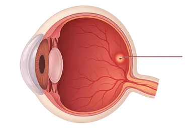
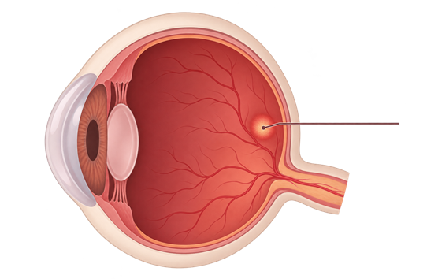
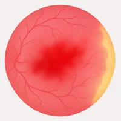
습성황반변성황반변성의
발생원인과 증상
발생원인
질환의 원인과 진행 과정은 연구가 계속되고 있습니다.
다만 노화로 노폐물이 쌓이고 산소가 부족해지면
망막 혈류가 줄면 비정상 혈관이 생길 수 있습니다.
비정상 혈관에서 출혈이나 삼출이 생기면 황반 기능에 영향을 줄 수 있습니다.
혈관에서 새어 나온 액체가 황반을 붓게 해 시력이 떨어집니다.
조직을 제거하는 방식은 수술법에 따라 달라집니다.
심혈관계 질환,
고콜레스테롤 혈증, 과도한
눈 상태가 나아졌다가 다시 불편해질 수도 있습니다.
-
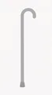
01노화
-
02
유전적 소인
-
03
심혈관계 질환
-
04
고콜레스테롤
혈증 -
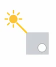
05과도한
자외선 노출
단계별 증상
-
초기
뚜렷한 이상을 느끼기 어려워 노안으로
착각하는 경우가 많습니다. 하지만 컨디션이
컨디션이
떨어질 때는 시력 저하가 두드러지고,
컨디션이 돌아오면 다시 나아지기를 되풀이합니다. -
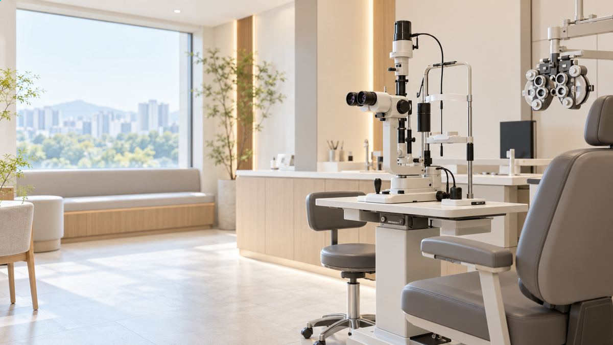
중기이상
글자나 직선이 흔들리거나 휘어져 보이는
'변형시'를 겪게 됩니다.
중증의 경우
사물의 중심이 까맣게 보이거나
공백이 생기고
가운데 부분이 지워진 듯 보이기도 합니다.
황반변성의
주요 증상과 자가진단
주요 증상
1단계
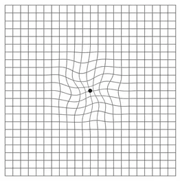
- 사물의 모양을 구별하기 어렵다.
- 직선이나 사물이 구부러져 보인다.
2단계
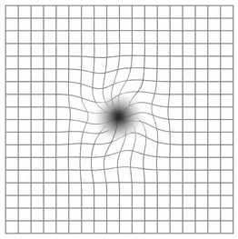
- 책이나 신문을 읽을 때 글자 사이가 비어 보인다.
- 사물 가운데가 검거나 비어 보인다.
3단계
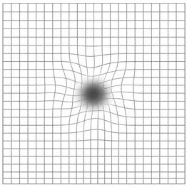
- 대비감(색과 명암을 구분하는 능력)이
떨어지고 시야 가운데에 검은 점이 보인다.
※ 한쪽에만 황반 문제가 생기면 다른 눈으로 보면서 적응하기도 합니다. 이 때문에 초기 변화를 스스로 알아차리지 못할 수 있습니다.
하지만 아래 증상이 있다면 정밀 검사가 필요합니다.
자가진단
암슬러 격자를 사용하면 황반의 시야 변화를
간단하게 확인할 수 있습니다.
선이 물결 모양으로 휘어져 보이거나,
가운데 둥근 점이 잘 안 보이거나 선 가운데가 휘어 보이면
끊어져 보이거나,
한 부분이 뿌옇거나 찌그러져 보인다면
황반변성일 수 있으니 바로 안과 전문의를 찾아
정밀 검사를 받아야 합니다.
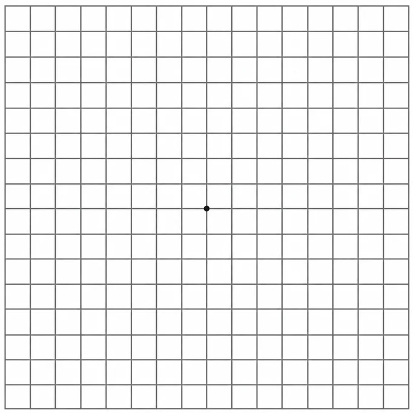
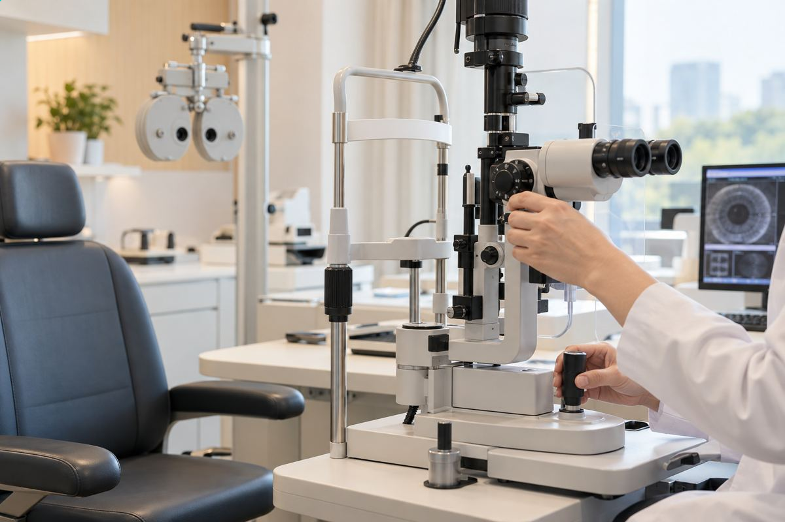
-
1
검사할 때 평소 사용하는 안경 또는
콘택트렌즈를 착용한 채 진행할 수 있습니다. -
2
한쪽 눈을 가리고 30cm 거리에서
암슬러 격자의 둥근 점을 바라봅니다. -
3
중심의 둥근 점에 시선을 고정시킨 후
선들이 어떻게 보이는지 기억합니다. -
4
반대편 눈도 똑같은 방법으로
검사합니다.
종류
MACULAR DEGENERATION
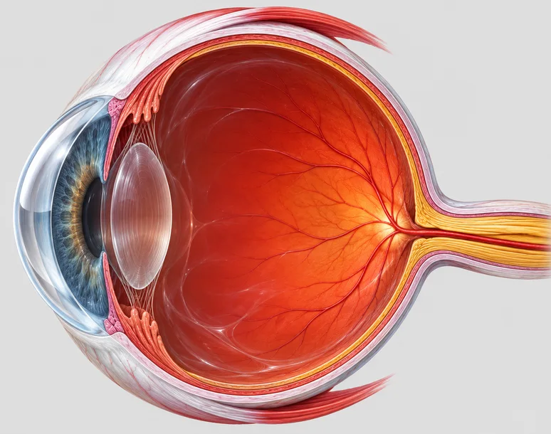
80%
건성 환반변성
20%
습성 환반변성
-
중심 시력을 담당하는
황반에 노폐물 축적
(건성 황반변성) -
신생 혈관이 자라면서
시세포 손상 가속화
(습성 황반변성) -
시력이 떨어지고
실명으로 진행
황반변성 치료 TREATMENT
치료 방법으로는 레이저 광응고술, 광역학요법, 주사 치료,
외과 수술과 여러 약물 치료가 있습니다.
또 미리 항산화제를 챙기고 선글라스를 쓰며
심혈관 질환을 예방하고 치료하는 것이 도움이 될 수 있습니다.
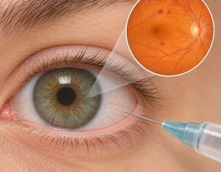
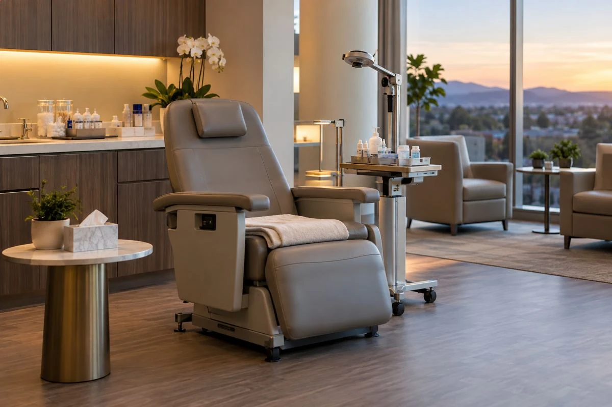
의료장비
OPTOS
한 번의 촬영으로 망막의 80%(200도)를 검사할 수 있고
가능하며
무산동으로 이루어지기 때문에
라식 · 라섹 같은 굴절수술 전 환자의 망막 상태를
보다 빠르고 정확하게 검사할 수 있는
망막 진단 장비입니다.
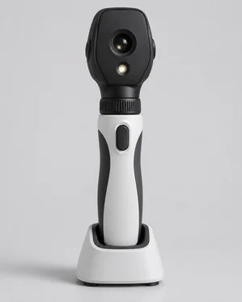
OPTOSOCT
OCT 검사는 눈 조직의 단층 영상과 단면을
횡당면을
CT나 MRI보다 10배 넘게 선명한 해상도로
검사할 수 있는
획기적인 장비입니다.
눈의 망막, 맥락막 질환 등에 대한
전반적인
정밀검사가 가능하며, 시신경층
상태를
정확하게 파악해 녹내장 초기의
시신경층 약화 및 손상을
확인하는
장비입니다.
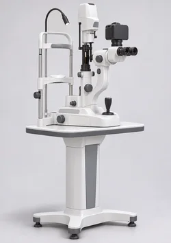
OCT